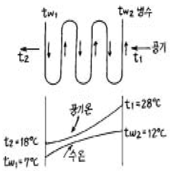

건축설비기사 (2005-03-20 기출문제)
1과목: 건축일반
1. 전열에 관한 다음의 설명 중 틀린 것은?
- 고체와 이에 접하는 유체 사이의 열이동을 열관류라 한다.
- 복사는 열이 고온의 물체표면으로부터 저온의 물체 표면으로 공간을 통하여 전달되는 현상을 말한다.
- 열전도는 열에너지가 주로 고체 속을 고온부에서 저온부로 이동하는 현상이다.
- 물체내부를 전도로 전달되는 열량은 전열면적, 온도차, 시간에 비례한다.
(정답률: 알수없음)

2. 철골구조의 재료상 분류에 포함되지 않는 것은?
- 보통형강 구조
- 강관 구조
- 트러스 구조
- 경량형강 구조
(정답률: 알수없음)
3. 블로운 아스팔트를 용제에 녹인 것으로 액상을 하고 있으며 아스팔트 방수, 아스팔트 타일의 바탕처리재로 이용되는 것은?
- 스트레이트 아스팔트
- 아스팔트 프라이머
- 아스팔트 컴파운드
- 아스팔트 펠트
(정답률: 알수없음)
4. 알루미늄 창호의 일반적인 특징에 대한 설명 중 옳지 않은 것은?
- 강도가 적고 내화성이 약하다.
- 알칼리, 염 등 화학약품에 저항성이 크다.
- 공작이 자유롭고 기밀성이 있다.
- 여닫음이 경쾌하고 미려하다.
(정답률: 알수없음)
5. 백화점 계획에 관한 설명으로 가장 옳지 않은 것은?
- 판매장은 지하층에 둘 수도 있다.
- 고객권과 상품권은 서로 떨어지게 한다.
- 기둥 간격은 대지 형태에 따른다.
- 가구 배치는 직각배치가 경제적이다.
(정답률: 알수없음)
6. 건조공기의 조성 중 질소(N2), 산소(O2) 다음으로 많은 성분은?
- 알곤
- 탄산가스
- 네온
- 헬륨
(정답률: 알수없음)
7. 음의 세기 단위는?
- Phon
- N/m2
- dB
- W/m2
(정답률: 알수없음)
8. 다음 중 플랫 슬래브(flat slab)의 구성요소인 것은?
- 받침판(drop panel)
- 장선(joist)
- 작은보(beam)
- 내부보
(정답률: 알수없음)
9. 주택의 평면계획에 대한 설명 중 잘못된 것은?
- 거실은 남향이나 동남향이 좋다.
- 침실과 식사실은 겸용하는 것이 좋다.
- 부엌은 위생상 서향으로 하는 것은 좋지 않다.
- 식당의 최소 면적은 식탁의 크기와 모양, 의자의 배치상태, 주변 통로와의 여유공간 등에 의하여 결정된다.
(정답률: 알수없음)
10. 고층 사무소의 단면 계획에 대한 설명 중 옳지 않은 것은?
- 기준층의 층고는 3.3∼4.0m 정도가 적당하다.
- 기준층의 천장은 2중 천장으로 하지 않는 것이 바람직하다.
- 최상층은 기준층보다 30cm 정도 높게 할 필요가 있다.
- 1층 층고는 은행 등의 영업장이 있는 경우 4.5∼5.0m정도로 한다.
(정답률: 알수없음)
11. 초등학교 건축 계획에 대한 설명 중 부적합한 것은?
- 초등학교 저학년에 맞는 교실운영 방식은 일반교실, 특별교실형(U+V형)이다.
- 일반교실과 특별교실은 분리하는 것이 좋다.
- 오픈 플랜 스쿨의 교실은 공간의 개방화, 대형화, 가변화를 고려하여야 한다.
- 초등학교 저학년의 교실은 주로 저층에 배치한다.
(정답률: 알수없음)
12. 학교 건축 배치 계획에서 분산 병렬형에 대한 설명으로 옳지 않은 것은?
- 구조계획이 간단하고 시공하기 쉽다.
- 놀이터 및 정원이 생긴다.
- 부지를 최대한 효율적으로 이용할 수 있다.
- 각 교실은 일조, 통풍 등 환경조건이 균등하게 된다.
(정답률: 알수없음)
13. 학교 교실의 실내 조도를 균일하게 하는 대책으로 적당하지 않은 것은?
- 천창
- 스포트 라이트
- 차양
- 유리블럭
(정답률: 알수없음)
14. 기둥에서 주근의 좌굴과 콘크리트가 수평으로 터져나가는 것을 구속하는 철근은?
- 띠철근
- 수직철근
- 굽힘철근
- 늑근
(정답률: 알수없음)
15. 백화점에 에스컬레이터를 설치하는 내용으로 옳지 않은 것은?
- 대량의 인원을 짧은 시간에 수송할 수 있다.
- 손님을 기다리게 하지 않고 종업원이 없어도 된다.
- 수송력에 비하여 점유 면적이 작다.
- 지하층에는 설치할 수 없다.
(정답률: 90%)
16. 왕대공 지붕틀에서 평보와 ㅅ자보의 접합부에 사용되는 철물은?
- 볼트
- 안장쇠
- 띠쇠
- 감잡이쇠
(정답률: 알수없음)
17. 실내조명 설계에서 우선적으로 고려해야 할 것은?
- 개략적인 조명계산을 실시한다.
- 소요조도를 결정한다.
- 소요전등의 갯수를 결정한다.
- 조명방식 및 조명기구를 선정한다.
(정답률: 알수없음)
18. 다음 사항 중 양식주택의 특징인 것은?
- 실의 용도가 혼용도이다.
- 좌식생활이다.
- 가구는 부차적 존재이다.
- 개방형이며 실의 분화로 되어 있다.
(정답률: 알수없음)
19. 벽돌벽 공간쌓기에 관한 기술중 틀린 것은?
- 벽돌벽을 이중으로 하고 중간을 띄어 쌓는 법이다.
- 공간은 3cm를 사이에 두고 밖벽은 1.0B 두께로 쌓는다.
- 안팎벽이 서로 다른재료라도 가능하다.
- 안벽과 밖벽은 벽돌 또는 철물로 연결하여 일체가 되도록 한다.
(정답률: 알수없음)
20. 철근콘크리트구조의 단점에 해당하지 않는 것은?
- 자중이 크고 개조 및 철거가 곤란하다.
- 폐 자재의 재활용이 어렵고 쓰레기 발생이 많다.
- 공기가 길고 시공이 번잡하다.
- 건조물의 형상과 치수를 자유롭게 만들 수 없다.
(정답률: 46%)
2과목: 위생설비
21. 온도 0℃, 길이 400m의 강관에 60℃의 급탕이 흐를 때 강관의 신축량(m)은? (단, 강관의 선팽창계수는 1.1x10-5/℃ 임.)
- 0.112
- 0.264
- 0.325
- 0.413
(정답률: 알수없음)
22. 트랩(trap)의 조건에 대한 기술 중 틀린 것은?
- 가동부분에서 봉수를 형성하지 않을 것
- 배수시에 자기세정이 가능할 것
- 가능한 한 구조가 간단할 것
- 봉수는 항상 가변적인 구조일 것
(정답률: 알수없음)
23. 수격작용 발생의 방지법이 아닌 것은?
- 양수펌프와 고가수조가 평면적으로 떨어져 있는 경우에 양수관의 수평배관을 가능한 한 높은 위치에 설치한다.
- 바이패스밸브를 통하여 소량의 역류를 일정시간 행한 후 전폐로 하는 완폐(緩閉)바이패스밸브 부착 체크밸브를 이용한다.
- 압력상승이 일어나기 시작했을 때 방출밸브 또는 안전밸브를 작용시켜 과잉압력을 관외로 방출한다.
- 볼텝을 수위조절밸브로 변경한다.
(정답률: 알수없음)
24. 다음 중 원심식 펌프의 일종으로 와권케이싱과 회전차로 구성되는 펌프는?
- 볼류트 펌프
- 피스톤 펌프
- 베인 펌프
- 마찰 펌프
(정답률: 알수없음)
25. 다음중 배수용 트랩으로 사용되지 않는 것은?
- 벨로즈트랩
- P트랩
- S트랩
- 드럼트랩
(정답률: 알수없음)
26. 보일러에는 경도가 높은 물을 사용해서는 안된다. 그 원인 중 옳지 않은 것은?
- 보일러 내면에 스케일(물때)이 생기기 때문에
- 전열 효율이 나빠지기 때문에
- 연관, 놋쇠관 따위를 침식시키기 때문에
- 보일러의 수명단축과 과열의 원인이 되기 때문에
(정답률: 알수없음)
27. 욕실 유니트화에 대한 설명으로 틀린 것은?
- 시공의 정밀도가 향상된다.
- 공사가 복잡하여 공기가 길어진다.
- 마무리가 균질화되며 설비가 경감화된다.
- 방수성능이 향상된다.
(정답률: 알수없음)
28. 물의 비중량은 1000[kg/m3], 양수량은 100[ℓ/min], 전양정은 20[m], 펌프효율은 60[%]일 때 양수펌프의 축동력[kW]은?
- 0.25
- 0.54
- 0.75
- 1.00
(정답률: 알수없음)
29. 관속의 유체가 정상 흐름을 하며 유선운동을 하고 있다고 가정할 때 전양정과 관계가 없는 것은?
- 속도수두
- 압력수두
- 위치수두
- 밀도수두
(정답률: 알수없음)
30. 급탕설비에 관한 설명 중 옳지 않은 것은?
- 급탕방식 중 개별식은 소규모 건물에 적합하고 중앙식은 대규모 건물에 유리하다.
- 급탕량 산정은 건물 연면적에 의해 구한다.
- 간접가열식 급탕설비는 대규모 건물에 많이 사용된다.
- 순간온수기는 사용량만 필요시마다 가열하여 사용하기때문에 팽창수조가 필요없다.
(정답률: 알수없음)
31. 다음 중 기구의 필요급수압력이 가장 작은 것은?
- 일반수전
- 대변기 세정밸브
- 샤워
- 소변기 세정밸브(스톨형 소변기)
(정답률: 알수없음)
32. 도기제 위생기구에 대한 설명 중 옳지 않은 것은?
- 오물이 부착되기 어려우며, 청소가 용이하다.
- 복잡한 구조의 것을 일체화하여 제작할 수 있다.
- 산, 알칼리에 침식된다.
- 오수, 악취를 흡수하지 않는다.
(정답률: 알수없음)
33. 옥내소화전설비의 시설기준에 관한 설명으로 옳지 않은 것은?
- 5층 건물의 각 층에 옥내소화전이 2개씩 설치된 경우 수원의 저수량은 5.2[m3]이상이다.
- 가압송수장치는 동결방지조치를 하거나 동결의 우려가 없는 장소에 설치한다.
- 지하층을 제외한 층수가 7층 이상으로 연면적이 2,000[m2]이상인 경우는 비상전원을 설치한다.
- 펌프가 수원의 수위보다 높은 위치에 있는 경우에는 유효수량이 10[L]이상되는 물올림 탱크를 설치한다.
(정답률: 알수없음)
34. 다음 중 기구배수부하 단위수가 가장 적은 것은?
- 일반형 수세기
- 오물용 싱크
- 세정밸브식 대변기
- 벽걸이형 소변기
(정답률: 알수없음)
35. 다음 중 경보설비가 아닌 것은?
- 자동화재 속보설비
- 무선통신 보조설비
- 자동화재 탐지설비
- 누전 경보기
(정답률: 알수없음)
36. 양수펌프의 크기 결정에 있어서 실양정(actual head)을 바르게 나타낸 것으로 맞는 것은?
- 흡입양정 + 토출양정
- 흡입양정 + 마찰양정
- 흡입양정 + 속도수두
- 토출양정 + 마찰양정
(정답률: 알수없음)
37. 다음 중 통기관의 설치와 관계없이 트랩의 봉수가 파괴되는 현상은?
- 흡인작용
- 증발작용
- 자기사이펀작용
- 분출작용
(정답률: 50%)
38. 플러시밸브 대변기를 사용하여 1분간 120ℓ의 물이 흐른다. 급수관의 연장 20m, 급수관의 직경 40mm일 때 이 관에 생기는 마찰에 의한 손실수주를 구한 값으로 맞는 것은? (단, 마찰손실계수는 f=0.04로 함)
- 0.06 kg/cm2
- 0.16 kg/cm2
- 0.26 kg/cm2
- 0.36 kg/cm2
(정답률: 알수없음)
39. 가스설비에 관한 다음 설명 중에서 가장 적당한 것은?
- 액화석유가스(LPG)는 공기보다 가볍다.
- 웨베지수는 가스의 연소성을 나타낸다.
- 도시가스를 공급압력에 따라 분류한 경우, 저압 공급시의 압력은 3㎏/cm2 미만을 말한다.
- 액화천연가스(LNG)의 주성분은 에탄이다.
(정답률: 알수없음)
40. 수세식 변소의 정화조의 용량결정시 기준이 되는 것으로 가장 적당한 것은?
- 건축연면적
- 대소변기의 수
- 건물의 층수
- 수세식 변소 사용인원
(정답률: 알수없음)
3과목: 공기조화설비
41. 온수난방 배관에서 리버스 리턴(Reverse return)방식을 사용하는 이유는?
- 배관의 신축을 흡수하기 위하여
- 배관의 길이를 짧게 하기 위하여
- 배관내의 공기배출을 용이하게 하기 위하여
- 온수의 유량분배를 균일하게 하기 위하여
(정답률: 알수없음)
42. 다음 용어 설명 중 옳지 않은 것은?
- 유효온도란 인체가 느끼는 따뜻함이나 서늘함 등의 느낌에 대한 온도, 습도 및 기류의 영향을 하나로 묶어 만든 쾌감의 지표이다.
- 서한도란 환기를 계획하는 경우에 실내에서 허용되는 오염도의 한계를 말하며 %나 ppm으로 나타낸다.
- 불쾌지수란 온도와 습도에 의해 사람이 느끼는 불쾌감을 숫자로 나타낸 것이다.
- 절대습도란 습공기의 수증기 분압과 그와 동일온도의 포화공기의 수증기 분압과의 비율을 말한다.
(정답률: 알수없음)
43. 어떤 벽체표면이 받는 전일사량 I = 220kcal/m2h이고, 이 때 외기온 to = 30℃라면 상당 외기온도는 얼마인가? (단, 벽체표면의 일사흡수율 a = 0.7, 표면 열전달률 αo = 20[kcal/m2h℃])
- 32.4℃
- 37.7℃
- 39.1℃
- 42.3℃
(정답률: 37%)
44. VAV(가변풍량) 공조방식의 특징으로 옳지 않은 것은?
- 동시 사용율을 고려해서 공조기 및 관련설비용량을 작게 할 가능성이 있다.
- 실내 부하변동에 따라서 송풍량을 감소시키므로 송풍동력을 절약할 수 있다.
- 개실별 부하변동에 대한 습도 및 공기청정도의 제어성이 우수하다.
- 연중을 통해 냉방이 가능하다.
(정답률: 알수없음)
45. 다음 중 유효온도가 높아질 수 있는 조건은?
- 습구온도 감소
- 풍속 감소
- 상대습도 감소
- 건구온도 감소
(정답률: 알수없음)
46. 공기조화기에 설치된 공기냉각기의 동관속을 흐르는 냉수의 유속으로 가장 적당한 것은?
- 1m/s
- 3m/s
- 5m/s
- 7m/s
(정답률: 30%)
47. 밸브 중 유체의 흐름방향을 한쪽으로만 제어하는 것은?
- 게이트밸브
- 글로브밸브
- 앵글밸브
- 체크밸브
(정답률: 73%)
48. FCU의 배관방식 중 냉난방을 동시에 할 경우 혼합손실이 없는 배관방식은?
- 1관식
- 2관식
- 3관식
- 4관식
(정답률: 알수없음)
49. 펌프에 관한 설명 중 옳지 않은 것은?
- 비교 회전수는 임펠러의 모양과 관계가 있다.
- 회전방향 구분은 모터측에서 펌프를 바라볼 때로 한다.
- 실제 사용효율은 이론적 효율보다 높다.
- 전양정은 실양정 + 배관손실수두 + 토출구의 속도수두이다.
(정답률: 64%)
50. 다음 중 배연방식에 속하지 않는 것은?
- 자연배연
- 기계배연
- 머쉬룸배연
- 스모크타워배연
(정답률: 알수없음)
51. 냉매가 구비해야 할 조건 중 옳지 않은 것은?
- 응축 압력이 낮을 것
- 증발이 잠열 및 증기의 비열이 클 것
- 열전도율 및 열전달율이 적을 것
- 금속에 대한 부식성이 없을 것
(정답률: 알수없음)
52. 대기오염이 심한 지역에 적합한 냉각탑은?
- 자연 통풍식
- 직교류형
- 대향류형
- 증발식
(정답률: 40%)
53. 습공기에 관한 기술 중 옳지 않은 것은?
- 온도가 일정할 경우 상대습도가 높을수록 노점온도는 높아진다.
- 상대습도가 일정할 경우 온도가 높을수록 비체적은 커진다.
- 온도가 일정할 경우 상대습도가 높을수록 절대습도는 낮아진다.
- 상대습도가 일정할 경우 온도가 높을수록 엔탈피는 커진다.
(정답률: 알수없음)
54. 다음 그림에서 대수평균 온도차 MTD를 구하면 얼마인가?

- 13.34℃
- 14.24℃
- 15.74℃
- 16.56℃
(정답률: 알수없음)
55. 덕트 설계시 정압재취득법에 의한 방법의 원리는?
- 동압감소를 정압으로 회수
- 전압감소를 동압으로 회수
- 정압감소를 동압으로 회수
- 정압감소를 전압으로 회수
(정답률: 알수없음)
56. 공조기에서 송풍기와 인터록(inter lock) 되는 것은?
- 방화댐퍼
- 가습밸브
- 냉온수밸브
- 외기댐퍼
(정답률: 알수없음)
57. 펌프의 NPSH(유효 흡입양정)에 관한 설명 중 옳지 않은 것은?
- 펌프설비에서 얻어지는 NPSH는 기압의 영향을 받는다.
- 펌프설비에서 얻어지는 NPSH는 흡입양정, 수온, 마찰, 손실 등에 의해 결정된다.
- 토오마의 캐비테이션계수는 비교회전수의 함수이다.
- 펌프설비에서 얻어지는 NPSH를 펌프가 필요로 하는 NPSH보다 작게 한다.
(정답률: 알수없음)
58. 증기 보일러에서 발생열량이 646,800㎉/h일 때, 환산 증발량(Ge)과 상당 방열면적(EDR)은 얼마인가? (단, 100℃물의 증발잠열은 539㎉/㎏이다.)
- Ge = 995㎏/h, EDR = 1,200m2
- Ge = 1,437㎏/h, EDR = 1,200m2
- Ge = 1,200㎏/h, EDR = 995m2
- Ge = 1,200㎏/h, EDR = 1,437m2
(정답률: 60%)
59. 벽 취출구에서 동일한 취출풍속일 때 상승거리가 가장 긴 시기는?
- 난방시
- 냉방시
- 중간기
- 어느 때나 동일
(정답률: 알수없음)
60. 건물의 공조방식 중에 에너지 절약측면에서 가장 불리한 것은?
- 단일덕트 정풍량방식
- 각층 유닛방식
- 유인유닛 방식
- 이중덕트방식
(정답률: 알수없음)
4과목: 소방 및 전기설비
61. 피뢰설비에 관한 설명으로 옳은 것은?
- 접지극은 지하 50cm 이상의 길이에 매설하고, 그 재질은 접지효과가 있는 알루미늄금속체를 사용한다.
- 다수의 접지극을 병렬로 접속하는 경우의 총합접지 저항은 50Ω 이하이어야 한다.
- 돌출지지철물로서 강관을 이용하는 경우 피뢰도선은 관내를 통해야 한다.
- 피뢰설비는 수전부, 피뢰도선 및 접지극의 3개의 부분으로 구성되어 있다.
(정답률: 알수없음)
62. 펌프용 전동기에서 양수량은 100(m3/분), 전양정은 10[m],펌프효율(η)은 85(%)인 경우 이 전동기의 용량(㎾)은 얼마인가? (단, 계수는 1.1 로 한다.)
- 157
- 215
- 324
- 436
(정답률: 알수없음)
63. 중앙감시반에 나타나는 램프의 색깔을 통하여 각 동력설비의 운전상태를 알 수 있다. 옳지 않게 표시된 것은?
- 운전표시: 적색램프
- 고장표시: 오렌지색램프
- 경보표시: 녹색램프
- 전원표시: 백색램프
(정답률: 알수없음)
64. 다음 중 광원의 연색성이 가장 좋은 등은?
- 백색 형광등
- 형광 수은등
- 나트륨등
- 크세논등
(정답률: 알수없음)
65. 다음 중 역률과 교류전력의 크기를 계산할 때 필요 없는 것은?
- 유효전력
- 무효전력
- 피상전력
- 최대전력
(정답률: 알수없음)
66. 물리계는 정상상태에 도달하기 전에 입력을 전혀 따르지 않는 기간이 존재하는데 이 기간사이의 응답을 무엇이라고 하는가?
- 과도응답
- 정상응답
- 선형응답
- 시간응답
(정답률: 알수없음)
67. 다음 중 전류의 이동으로 발생하는 현상이 아닌 것은?
- 발열작용
- 화학작용
- 저항작용
- 자기작용
(정답률: 알수없음)
68. 교류회로의 전력에 대한 설명으로 옳은 것은?
- 피상전력이란 소비전력이다.
- 역률은 작을수록 좋다.
- 역률이 1일 때 유효전력과 피상전력은 같아진다.
- 피상전력이 크면 역률이 커진다.
(정답률: 43%)
69. 무접점 계전기에 사용되는 전력전자소자(트랜지스터, 다이오드)의 장점이 아닌 것은?
- 스위칭 속도가 빠르다.
- 전력소비가 대단히 작다.
- 접점의 개폐동작으로 인한 마모현상이 없다.
- 잡음(noise)의 영향을 받지 않는다.
(정답률: 91%)
70. 3상 유도 전동기의 회전 원리를 설명할 수 있는 것은?
- 브론델 법칙
- 앙페르의 오른나사 법칙
- 아라고 원판
- 정전유도
(정답률: 알수없음)
71. 다음 중 불연속 제어에 속하는 것은?
- 비례제어
- 미분제어
- 적분제어
- on-off제어
(정답률: 25%)
72. 어떤 코일에 50[Hz]의 교류 전압을 가할 때 리액턴스가 628[Ω]이었다. 이 코일의 자기인덕턴스[H]는?
- 1
- 2
- 3
- 4
(정답률: 알수없음)
73. 400[V] 이하의 저압용 기계기구의 금속제 외함에 사용되는 접지공사는?
- 특별 제3종 접지공사
- 제1종 접지공사
- 제2종 접지공사
- 제3종 접지공사
(정답률: 알수없음)
74. 완전 확산면의 광속 발산도가 2,000[lx]일 때 휘도는 약 몇[cd/cm2]인가?
- 0.02
- 0.064
- 0.628
- 6.28
(정답률: 0%)
75. 최대 수요전력(kW)과 부하설비용량의 비를 나타낸 것은?
- 부하율
- 수용률
- 부등률
- 역률
(정답률: 60%)
76. 다음 중 건전지의 전압을 측정할 때 사용되는 계기는?
- 교류전압계
- 직류전압계
- 교류전류계
- 직류전류계
(정답률: 알수없음)
77. 전류의 자기현상을 이용한 기기는?
- 축전지
- 전동기
- 반도체정류기
- 열동과전류계전기
(정답률: 알수없음)
78. 다음 중 형광등 기구에 취부하는 안정기의 사용목적으로 가장 알맞은 것은?
- 광속의 증가
- 잡음의 방지
- 역율의 개선
- 방전의 안정
(정답률: 알수없음)
79. 인텔리젼트 빌딩의 시스템 개념이 아닌 것은?
- 빌딩 자동화 시스템
- 정보통신 자동화 시스템
- 사무 자동화 시스템
- 개방형 서비스 시스템
(정답률: 알수없음)
80. 변압기에 적용되는 법칙이 아닌 것은?
- 암페어의 오른손의 법칙
- 렌쯔의 법칙
- 페러데이의 전자유도법칙
- 키르히호프의 제 1법칙
(정답률: 알수없음)
5과목: 건축설비관계법규
81. 건물의 증축 또는 용도변경되는 경우에 오수처리시설을 설치하지 않아도 되는 건축물의 규모는?
- 건축연면적이 1,600m2인 건물
- 골프장업 및 스키장업의 사업장안의 오수가 발생하는 건물
- 건축연면적이 300m2인 여객자동차터미널
- 목욕장업에 필요한 건축연면적이 200m2인 건물
(정답률: 24%)
82. 철골조의 내화구조 기준으로 틀린 것은?
- 벽의 경우 골구를 철골조로 하고 그 양면을 4cm 이상의 철망모르타르로 덮은 것
- 기둥의 경우 철골을 6cm 이상의 벽돌로 덮은 것
- 보의 경우 철골을 6cm 이상의 철망모르타르로 덮은 것
- 보의 경우 철골을 5cm 이상의 콘크리트로 덮은 것
(정답률: 15%)
83. 장례식장의 집회실로서 그 바닥면적이 210m2일 경우 노대가 있을 때 노대 아랫부분의 반자높이는 얼마 이상이어야 하는가?
- 2.1m
- 2.4m
- 2.7m
- 4.0m
(정답률: 알수없음)
84. 옥내소화전설비를 설치하여야 할 특정소방대상물의 기준으로 옳지 않은 것은?
- 연면적 3,000m2 이상
- 지하가중 터널로서 길이가 1,000m 이상인 터널
- 복합건축물로서 연면적이 1,500m2 이상
- 주차의 용도로 사용되는 부분의 면적이 300m2 이상
(정답률: 알수없음)
85. 건축허가시 관할 소방본부장 또는 소방서장의 동의를 받아야하는 일반건축물의 연면적 기준은?
- 연면적이 200m2 이상인 건축물
- 연면적이 400m2 이상인 건축물
- 연면적이 500m2 이상인 건축물
- 연면적이 1,000m2 이상인 건축물
(정답률: 알수없음)
86. 헬리포트의 설치기준에 관한 내용으로 옳지 않은 것은?
- 층수가 11층이상인 건축물로서 11층이상의 층의 바닥면적 합계가 10,000m2이상인 건축물의 옥상에는 헬리포트를 설치할 것
- 헬리포트의 길이와 너비는 각각 22m 이상으로 할 것
- 헬리포트 중심으로부터 반경 10m 이내에는 이·착륙에 장애가 되는 건축물을 설치하지 아니할 것
- 헬리포트의 주위한계선은 백색으로 하되, 그 선의 너비는 38센티미터로 할 것
(정답률: 알수없음)
87. 7층의 유스호스텔 배연설비에 관한 사항 중 틀린 것은?
- 배연창의 유효면적은 1m2 이상이거나 당해 건축물의 바닥면적의 1/100 이상으로 한다.
- 배연구는 손으로도 열고 닫을 수 있어야 한다.
- 방화구획이 설치된 경우에는 그 구획마다 1개소 이상의 배연창을 설치하여야 한다.
- 배연구는 예비전원에 의해 열 수 있도록 한다.
(정답률: 30%)
88. 다음 중 대수선의 범위의 기준으로 옳지 않은 것은?
- 내력벽의 벽면적을 20제곱미터 이상 해체하여 수선 또는 변경하는 것
- 지붕틀을 3개 이상 해체하여 수선 또는 변경하는 것
- 주계단·피난계단 또는 특별피난계단을 해체하여 수선 또는 변경하는 것
- 다가구주택 및 다세대주택의 가구 및 세대간 주요구조 부인 경계벽의 수선 또는 변경
(정답률: 30%)
89. 지역에너지계획에 포함되지 않는 사항은?
- 에너지관련기술의 개발 및 보급을 촉진하기 위한 대책
- 지역안의 미활용 에너지원을 개발하기 위한 대책
- 지역안의 환경친화적 에너지이용을 위한 대책
- 에너지이용의 합리화와 이를 통한 온실가스의 배출을 줄이기 위한 대책
(정답률: 알수없음)
90. 대지관련 건축기준의 허용오차가 가장 적은 것은?
- 건폐율
- 용적률
- 건축선의 후퇴거리
- 인접건축물과의 거리
(정답률: 알수없음)
91. 건축허가를 신청할 때 교육연구 및 복지시설중 연구소 용도의 건축물로서 바닥면적의 합계가 몇 m2이상일 때 에너지절약계획서를 제출하는가?
- 500m2 이상
- 2,000m2 이상
- 3,000m2 이상
- 10,000m2 이상
(정답률: 31%)
92. 옥외소화전설비를 설치하여야 할 특정소방대상물의 기준으로 옳은 것은?
- 지상 1층 및 2층의 바닥면적의 합계가 3,000m2 이상인 것
- 지상 1층 및 2층의 바닥면적의 합계가 6,000m2 이상인 것
- 지상 1층 및 2층의 바닥면적의 합계가 7,000m2 이상인 것
- 지상 1층 및 2층의 바닥면적의 합계가 9,000m2 이상인 것
(정답률: 알수없음)
93. 특정지역에 설치하는 오수처리시설의 생물화학적 산소 요구량(방류수수질기준)은 얼마 이하이어야 하는가?
- 10㎎/ℓ
- 20㎎/ℓ
- 100㎎/ℓ
- 200㎎/ℓ
(정답률: 알수없음)
94. 주거에 쓰이는 바닥면적의 합계가 100제곱미터인 주거용 건축물에 배관하여야 할 급수관의 최소 지름은?
- 20mm
- 25mm
- 32mm
- 40mm
(정답률: 알수없음)
95. 특정열사용기자재중 산업자원부령이 정하는 검사대상기기의 제조업자는 그 검사대상기기의 제조에 관하여 누구의 검사를 받아야 하는가?
- 건설교통부장관
- 산업자원부장관
- 시·도지사
- 시장·군수·구청장
(정답률: 알수없음)
96. 6층 이상의 층의 거실바닥 면적 합계가 7,000m2인 사무소 건물의 승용 승강기를 설치해야 하는 최소 대수는?
- 2대
- 3대
- 4대
- 5대
(정답률: 알수없음)
97. 국가에너지기본계획에 관한 설명 중 잘못된 것은?
- 산업자원부장관이 수립한다.
- 국가에너지기본계획은 3년마다 수립한다.
- 국가에너지기본계획은 10년 이상을 계획기간으로 한다.
- 국가에너지기본계획은 국내외 에너지수급 정세의 추이와 전망이 포함되어야 한다.
(정답률: 알수없음)
98. 스프링클러설비를 설치하여야 할 특정소방대상물의 기준으로 옳은 것은?
- 판매 및 영업시설로서 수용인원이 200인 이상인 것
- 판매 및 영업시설로서 수용인원이 300인 이상인 것
- 판매 및 영업시설로서 수용인원이 400인 이상인 것
- 판매 및 영업시설로서 수용인원이 500인 이상인 것
(정답률: 알수없음)
99. 건축물에 설치하는 굴뚝의 구조로 옳은 것은?
- 굴뚝의 옥상 돌출부는 용마루에서 수직거리를 1m이상으로 할 것
- 굴뚝의 상단으로부터 수평거리 1m 이내에 다른 건축물이 있는 경우에는 그 건축물의 처마보다 50㎝이상 높게 할 것
- 석면제 굴뚝은 목재 기타 가연재료로부터 10㎝이상 떨어져서 설치할 것
- 석면제 굴뚝으로서 건축물의 지붕속에 있는 굴뚝의 부분은 금속 외의 불연재료로 덮을 것
(정답률: 알수없음)
100. 에너지이용합리화법의 제정목적으로 타당하지 않은 것은?
- 원유수입 촉진을 위하고 석유제품의 합리적 판매를 위해서
- 에너지의 수급안정을 위해서
- 에너지의 합리적이고 효율적인 이용을 증진하기 위해서
- 에너지소비로 인한 환경피해를 줄이기 위해서
(정답률: 알수없음)
고체와 이에 접하는 유체 사이의 열이동을 열관류라 하는 이유는, 고체와 유체는 서로 접촉하여 열이 전달되기 때문입니다. 이에 반해 복사는 매질 없이도 열을 전달할 수 있으므로, 열관류와는 구분됩니다.
열전도는 열에너지가 고체 속에서 분자 간 충돌을 통해 전달되는 현상입니다. 따라서 "고체 속에서 열이 전달되는 현상"이라는 설명이 더 적합합니다.
물체 내부를 전도로 전달되는 열량은 전열면적, 온도차, 시간에 비례합니다. 이는 열전도의 기본적인 법칙으로, 열전도율이 높은 물질일수록 빠르게 열이 전달되며, 온도차가 클수록 더 많은 열이 전달됩니다.